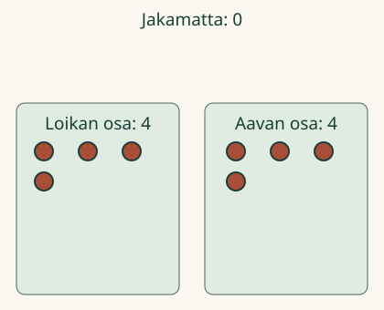
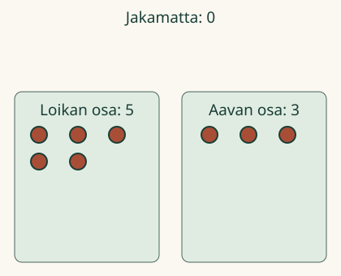

Aava ja Loikka jakavat 8 merkkiä puoliksi.
Aava ja Loikka jakavat 8 merkkiä puoliksi.
Puoliksi kummallekin
Jaan määrän kahteen yhtä suureen osaan. Puoliksi jaettaessa kummallakin on yhtä monta. Kaikki merkit jaetaan.
Katso jako tai kokeile itse. Montako kumpikin saa?
Aava ja Loikka jakavat 8 merkkiä puoliksi.
Jaan määrän kahteen yhtä suureen osaan. Puoliksi jaettaessa kummallakin on yhtä monta. Kaikki merkit jaetaan.
Katso jako tai kokeile itse. Montako kumpikin saa?
Ilman liikkuvaa kuvaa: jaa pöydällä 8 merkkiä kahteen yhtä suureen osaan. Kumpikin saa 4. Kokeile myös kuudella merkillä.

8 jaetaan osiin 4 ja 4. Kumpikin saa 4. Myös 6 voidaan jakaa puoliksi: 3 ja 3.

Entä 5 ja 3? Siirrä yksi Loikalta Aavalle. Nyt kummallakin on 4. Ennusta: riittääkö, että merkit ovat kahdessa kasassa?
Ei. Osissa pitää olla yhtä monta, ja koko määrä pitää jakaa. Jos kummallakin on 3 ja kasassa vielä 2, jako on kesken.
Pöydällä on 10 korttia. Jaa ne puoliksi kahdelle. Kumpikin saa 5 korttia.
Anna yksi Loikalle ja yksi Aavalle. Jatka, kunnes kasa on tyhjä. Vuorottelu auttaa, mutta voit jakaa toisessakin järjestyksessä. Korjauspainikkeilla voit palauttaa tai siirtää yhden. Saat vastata suoraan, jos tiedät.
Loikka sai puolet ja hänellä on 3 merkkiä. Aavalla on yhtä monta. Kokoa molemmat osat yhteen: alussa oli 6. Entä jos kokonaisia merkkejä onkin 7? Kaikkia ei voi jakaa kahteen yhtä suureen kokonaismerkkien osaan.
Vuosiluokat 1–2, M-NUM-17, käsite/atomic. Ainoa vaadittu JA-esitieto on M-NUM-02. Tässä puolitetaan lukumäärää, ei pinta-alaa tai esineen kokoa. Ydinmäärät ovat 2–10 parillisina. Parittoman määrän jäännös on vain lisäpohdinta; murtolukuja ei vaadita.
Numerokysymys koskee tulevaa tasajakoa: oikea luku ei hyväksy keskeneräistä näkyvää mallia. Mallin oma tarkistus vaatii koko määrän sekä kaksi yhtä suurta osaa. Numerovastaus ei edellytä mallin läpikäyntiä. Eri jakamisjärjestykset ja eri alkuperäisten merkkien päätyminen puolikkaisiin ovat sallittuja. Toisto on tuettu malli, ei näyttö itse valitusta strategiasta.
Käytä oikeita turvallisia laskumerkkejä. Lapsi saa jakaa, osoittaa, kirjoittaa tai kertoa. Aikuinen voi lukea ohjeet. Ei esineiden nimeämis- tai puhevahvistuspakkoa. Näkyvät luvut ja korjausapu ovat opetustukea; ruutuvastaus ei todista fyysistä jakamista, itsenäistä tai säilyvää osaamista. Ei pisteitä, henkilökohtaista historiaa tai oppimisvaikutuksen väitettä.
Lopuksi: mitä tarkistat, jotta jako on puoliksi?